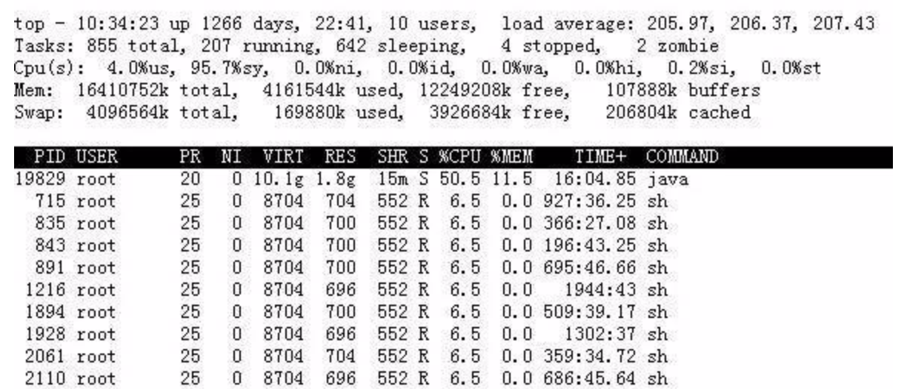
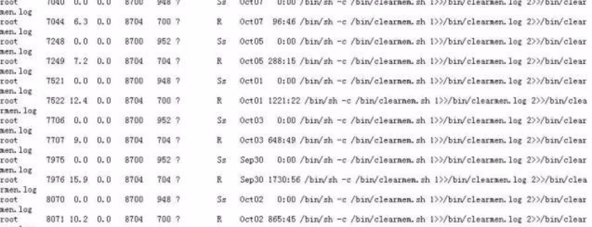

【脚本25】找规律打印数字
请详细查看如下几个数字的规律，并使用shell脚本输出后面的十个数字。
10 31 53 77 105 141 …….
试题解析：
我想大多数人都会去比较这些数字的差值：
10 31 53 77 105 141
21 22 24 28 36
但是这个差值看，并没有什么规律，而我们再仔细看的时候，发现这个差值的差值是有规律的：
10 31 53 77 105 141
21 22 24 28 36
1 2 4 8
- 脚本实现：
#! /bin/bash
x=21
m=10
echo $m
for i in `seq 0 14`; do
j=$[2**$i]
m=$[$m+$x]
echo $m
x=$[$x+$j]
done【脚本26】统计普通用户
写个shell，看看你的Linux系统中是否有自定义用户（普通用户），若是有，一共有几个？
假设所有普通用户都是uid大于1000的
- 脚本实现：
#!/bin/bash
n=`awk -F ':' '$3>1000' /etc/passwd|wc -l`
if [ $n -gt 0 ]
then
echo "There are $n common users."
else
echo "No common users."
fi【脚本27】监控磁盘使用率
写一个shell脚本，检测所有磁盘分区使用率和inode使用率并记录到以当天日期为命名的日志文件里，当发现某个分区容量或者inode使用量大于85%时，发邮件通知你自己。
思路：
就是先df -h 然后过滤出已使用的那一列，然后再想办法过滤出百分比的整数部分，然后和85去比较，同理，inode也是一样的思路。实现代码：
#!/bin/bash
## This script is for record Filesystem Use%,IUse% everyday and send alert mail when % is more than 85%.
log=/var/log/disk/`date +%F`.log
date +'%F %T' > $log
df -h >> $log
echo >> $log
df -i >> $log
for i in `df -h|grep -v 'Use%'|sed 's/%//'|awk '{print $5}'`; do
if [ $i -gt 85 ]; then
use=`df -h|grep -v 'Use%'|sed 's/%//'|awk '$5=='$i' {print $1,$5}'`
echo "$use" >> use
fi
done
if [ -e use ]; then
##这里可以使用咱们之前介绍的mail.py发邮件
mail -s "Filesystem Use% check" root@localhost < use
rm -rf use
fi
for j in `df -i|grep -v 'IUse%'|sed 's/%//'|awk '{print $5}'`; do
if [ $j -gt 85 ]; then
iuse=`df -i|grep -v 'IUse%'|sed 's/%//'|awk '$5=='$j' {print $1,$5}'`
echo "$iuse" >> iuse
fi
done
if [ -e iuse ]; then
mail -s "Filesystem IUse% check" root@localhost < iuse
rm -rf iuse
fi- 思路：
df -h、df -i 记录磁盘分区使用率和inode使用率，date +%F 日志名格式
取出使用率(第5列)百分比序列，for循环逐一与85比较，大于85则记录到新文件里，当for循环结束后，汇总超过85的一并发送邮件(邮箱服务因未搭建，发送本地root账户)。
此脚本正确运行前提：
该系统没有逻辑卷的情况下使用，因为逻辑卷df -h、df -i 时，使用率百分比是在第4列，而不是第5列。如有逻辑卷，则会漏统计逻辑卷使用情况。
【脚本28】获取文件列表
有一台服务器作为web应用，有一个目录（/data/web/attachment）不定时地会被用户上传新的文件，但是不知道什么时候会上传。所以，需要我们每5分钟做一次检测是否有新文件生成。
请写一个shell脚本去完成检测。检测完成后若是有新文件，还需要将新文件的列表输出到一个按年、月、日、时、分为名字的日志里。请不要想的太复杂，核心命令只有一个 find /data/web/attachment -mmin -5
思路：
每5分钟检测一次，那肯定需要有一个计划任务，每5分钟去执行一次。脚本检测的时候，就是使用find命令查找5分钟内有过更新的文件，若是有更新，那这个命令会输出东西，否则是没有输出的。固，我们可以把输出结果的行数作为比较对象，看看它是否大于0。实现代码：
#!/bin/bash
d=`date -d "-5 min" +%Y%m%d%H%M`
basedir=/data/web/attachment
find $basedir/ -type f -mmin -5 > /tmp/newf.txt
n=`wc -l /tmp/newf.txt`
if [ $n -gt 0 ]; then
/bin/mv /tmp/newf.txt /tmp/$d
fi【脚本29】统计常用命令
写一个shell脚本来看看你使用最多的命令是哪些，列出你最常用的命令top10。
思路：我们要用到一个文件就是.bash_history，然后再去sort、uniq，剩下的就不用我多说了吧。很简单一个shell。
一条命令即可：
sort /root/.bash_history |uniq -c |sort -nr |head
【脚本30】统计日志大小
假如我们需要每小时都去执行你写的脚本。在脚本中实现这样的功能，当时间是0点和12点时，需要将目录/data/log/下的文件全部清空，注意只能清空文件内容而不能删除文件。而其他时间只需要统计一下每个文件的大小，一个文件一行，输出到一个按日期和时间为名字的日志里。 需要考虑/data/log/目录下的二级、三级、… 等子目录里面的文件。
- 实现代码：
#!/bin/bash
logdir="/data/log"
t=`date +%H`
d=`date +%F-%H`
[ -d /tmp/log_size ] || mkdir /tmp/log_size
for log in `find $logdir -type f`
do
if [ $t == "0" ] || [ $t == "12" ]
then
true > $log
else
du -sh $log >>/tmp/log_size/$d
fi
done【脚本31】统计数字并求和
计算文档a.txt中每一行中出现的数字个数并且要计算一下整个文档中一共出现了几个数字。例如a.txt内容如下：
12aa*lkjskdj
alskdflkskdjflkjj
我们脚本名字为 ncount.sh, 运行它时：
bash ncount.sh a.txt
输入结果应该为：
2
0
sum:2- 实现代码：
#!/bin/bash
n=`wc -l a.txt|awk '{print $1}'`
sum=0
for i in `seq 1 $n`
do
line=`sed -n "$i"p a.txt`
n_n=`echo -n $line|sed 's/[^0-9]//g'|wc -c`
echo line $i number: $n_n
sum=$[$sum+$n_n]
done
echo sum is $sum【脚本32】检测文件改动
有两台Linux服务器A和B，假如A可以直接ssh到B，不用输入密码。A和B都有一个目录叫做/data/web/ 这下面有很多文件，当然我们不知道具体有几层子目录，假若之前A和B上该目录下的文件都是一模一样的。但现在不确定是否一致了。固需要我们写一个脚本实现这样的功能，检测A机器和B机器/data/web/目录下文件的异同，我们以A机器上的文件作为标准。比如，假若B机器少了一个a.txt文件，那我们应该能够检测出来，或者B机器上的b.txt文件有过改动，我们也应该能够检测出来（B机器上多了文件我们不用考虑）。
- 提示：
使用核心命令 md5sum a.txt 算出md5值，去和B机器上的比较。
- 实现代码：
#!/bin/bash
#假设A机器到B机器已经做了无密码登录设置
dir=/data/web
##假设B机器的IP为192.168.0.100
B_ip=192.168.0.100
find $dir -type f |xargs md5sum >/tmp/md5.txt
ssh $B_ip "find $dir -type f |xargs md5sum >/tmp/md5_b.txt"
scp $B_ip:/tmp/md5_b.txt /tmp
for f in `awk '{print $2}' /tmp/md5.txt`
do
if grep -q "$f" /tmp/md5_b.txt
then
md5_a=`grep $f /tmp/md5.txt|awk '{print $1}'`
md5_b=`grep $f /tmp/md5_b.txt|awk '{print $1}'`
if [ $md5_a != $md5_b ]
then
echo "$f changed."
fi
else
echo "$f deleted. "
fi
done【脚本33】统计网卡流量
写一个脚本,检测你的网络流量，并记录到一个日志里。需要按照如下格式，并且一分钟统计一次（只需要统计外网网卡，假设网卡名字为eth0)：
2017-08-04 01:11
eth0 input: 1000bps
eth0 output : 200000bps
################
2017-08-04 01:12
eth0 input: 1000bps
eth0 output : 200000bps
提示：使用sar -n DEV 1 59 这样可以统计一分钟的平均网卡流量，只需要最后面的平均值。另外，注意换算一下，1byt=8bit
- 实现代码：
#!/bin/bash
while :
do
LANG=en
DATE=`date +"%Y-%m-%d %H:%M"`
LOG_PATH=/tmp/traffic_check/`date +%Y%m`
LOG_FILE=$LOG_PATH/traffic_check_`date +%d`.log
[ -d $LOG_PATH ] || mkdir -p $LOG_PATH
echo " $DATE" >> $LOG_FILE
sar -n DEV 1 59|grep Average|grep eth0 \
|awk '{print "\n",$2,"\t","input:",$5*1000*8,"bps", \
"\t","\n",$2,"\t","output:",$6*1000*8,"bps" }' \
>> $LOG_FILE
echo "#####################" >> $LOG_FILE
done【脚本34】系统-批量杀进程
今天发现网站访问超级慢，top看如下：
有很多sh进程，再ps查看：
这个脚本，运行很慢，因为制定了cron，上一次还没有运行完，又有了新的运行任务。太多肯定会导致系统负载升高。当务之急就是先把这些在跑的给kill掉。那么我们可以使用一条命令，直接杀死所有的sh。
命令如下：
ps aux |grep clearmem.sh |grep -v grep|awk '{print $2}'|xargs kill
【脚本35】判断是否开启80端口
写一个脚本判断你的Linux服务器里是否开启web服务？（监听80端口）如果开启了，请判断出跑的是什么服务，是httpd呢还是nginx又或者是其他的什么？
- 实现代码：
#!/bin/bash
port=`netstat -lnp | grep 80`
if [ -z "port" ]; then
echo "not start service.";
exit;
fi
web_server=`echo $port | awk -F'/' '{print $2}'|awk -F : '{print $1}'`
case $web_server in
httpd )
echo "apache server."
;;
nginx )
echo "nginx server."
;;
* )
echo "other server."
;;
esac【脚本36】监控mysql服务
假设，当前MySQL服务的root密码为123456，写脚本检测MySQL服务是否正常（比如，可以正常进入mysql执行show processlist），并检测一下当前的MySQL服务是主还是从，如果是从，请判断它的主从服务是否异常。如果是主，则不需要做什么。
- 实现代码：
#!/bin/bash
Mysql_c="mysql -uroot -p123456"
$Mysql_c -e "show processlist" >/tmp/mysql_pro.log 2>/tmp/mysql_log.err
n=`wc -l /tmp/mysql_log.err|awk '{print $1}'`
if [ $n -gt 0 ]
then
echo "mysql service sth wrong."
else
$Mysql_c -e "show slave status\G" >/tmp/mysql_s.log
n1=`wc -l /tmp/mysql_s.log|awk '{print $1}'`
if [ $n1 -gt 0 ]
then
y1=`grep 'Slave_IO_Running:' /tmp/mysql_s.log|awk -F : '{print $2}'|sed 's/ //g'`
y2=`grep 'Slave_SQL_Running:' /tmp/mysql_s.log|awk -F : '{print $2}'|sed 's/ //g'`
if [ $y1 == "Yes" ] && [ $y2 == "Yes" ]
then
echo "slave status good."
else
echo "slave down."
fi
fi
fi【脚本37】带选项的用户脚本
- 要求如下：
只支持三个选项 ‘–del’ ‘–add’ –help输入其他选项报错。
使用‘–add’需要验证用户名是否存在，存在则反馈存在。且不添加。 不存在则创建该用户，切>添加与该用户名相同的密码。并且反馈。
使用‘–del’ 需要验证用户名是否存在，存在则删除用户及其家目录。不存在则反馈该用户不存>在。
–help 选项反馈出使用方法
支持以，分隔 一次删除多个或者添加多个用户。
能用echo $? 检测脚本执行情况 成功删除或者添加为0,报错信息为其他数字。
能以，分割。一次性添加或者 删除多个用户。 例如 adddel.sh –add user1,user2,user3…….
不允许存在明显bug。
- 代码参考：
#!/bin/bash
#written by aming.
if [ $# -eq 0 -o $# -gt 2 ]
then
echo "use $0 --add username or $0 --del username or $0 --help."
exit 1
fi
case $1 in
--add)
n=0
for u in `echo $2|sed 's/,/ /g'`; do
if awk -F: '{print $1}' /etc/passwd |grep -qw "$u"
then
echo "The user $u exist."
else
useradd $u
echo -e "$u\n$u"|passwd $u >/dev/null 2>&1
echo "The user $u added successfully."
n=$[$n+1]
fi
done
if [ $n -eq 0 ]; then
exit 2
fi
;;
--del)
n=0
for u in `echo $2|sed 's/,/ /g'`; do
if awk -F: '{print $1}' /etc/passwd|grep -qw "$u"
then
userdel -r $u
echo "The user $u deleted successfully."
n=$[$n+1]
else
echo "The user $u not exist."
fi
done
if [ $n -eq 0 ]; then
exit 3
fi
;;
--help)
echo -e "--add can add user,and the passwd is the same as username.
It can add multiuser such as --add user1,user2,user3..."
echo "--del cat delete user.It can delete user such as --del user1,user2,user3..."
;;
*)
echo "use $0 --add username or $0 --del username or $0 --help."
exit 1
;;
esac【脚本38】被3整除
写一个脚本： 计算100以内所有能被3整除的正整数的和
- 代码参考：
#!/bin/bash
sum=0
for i in {1..100};do
if [ $[$i%3] -eq 0 ];then
sum=$[$i+$sum]
fi
done
echo "sum:$sum"【脚本39】脚本传参
使用传参的方法写个脚本，实现加减乘除的功能。例如： sh a.sh 1 2，这样会分别计算加、减、乘、除的结果。
- 要求：
脚本需判断提供的两个数字必须为整数
当做减法或者除法时，需要判断哪个数字大
减法时需要用大的数字减小的数字
除法时需要用大的数字除以小的数字，并且结果需要保留两个小数点。
- 参考代码：
#!/bin/bash
if [ $# -ne 2 ]
then
echo "The number of parameter is not 2, Please useage: ./$0 1 2"
exit 1
fi
is_int()
{
if echo "$1"|grep -q '[^0-9]'
then
echo "$1 is not integer number."
exit 1
fi
}
max()
{
if [ $1 -ge $2 ]
then
echo $1
else
echo $2
fi
}
min()
{
if [ $1 -lt $2 ]
then
echo $1
else
echo $2
fi
}
sum()
{
echo "$1 + $2 = $[$1+$2]"
}
minus()
{
big=`max $1 $2`
small=`min $1 $2`
echo "$big - $small = $[$big-$small]"
}
mult()
{
echo "$1 * $2 = $[$1*$2]"
}
div()
{
big=`max $1 $2`
small=`min $1 $2`
d=`echo "scale =2; $big / $small"|bc`
echo "$big / $small = $d"
}
is_int $1
is_int $2
sum $1 $2
minus $1 $2
mult $1 $2
div $1 $2【脚本40】用户交互脚本
写一个脚本，执行后，打印一行提示“Please input a number:”，要求用户输入数值，然后打印出该数值，然后再次要求用户输入数值。直到用户输入”end”停止。
- 代码参考：
#!/bin/bash
while :
do
read -p "Please input a number:(end for exit) " n
num=` echo $n |sed -r 's/[0-9]//g'|wc -c `
if [ $n == "end" ]
then
exit
elif [ $num -ne 1 ]
then
echo "what you input is not a number!Try again!"
else
echo "your input number is: $n"
fi
done